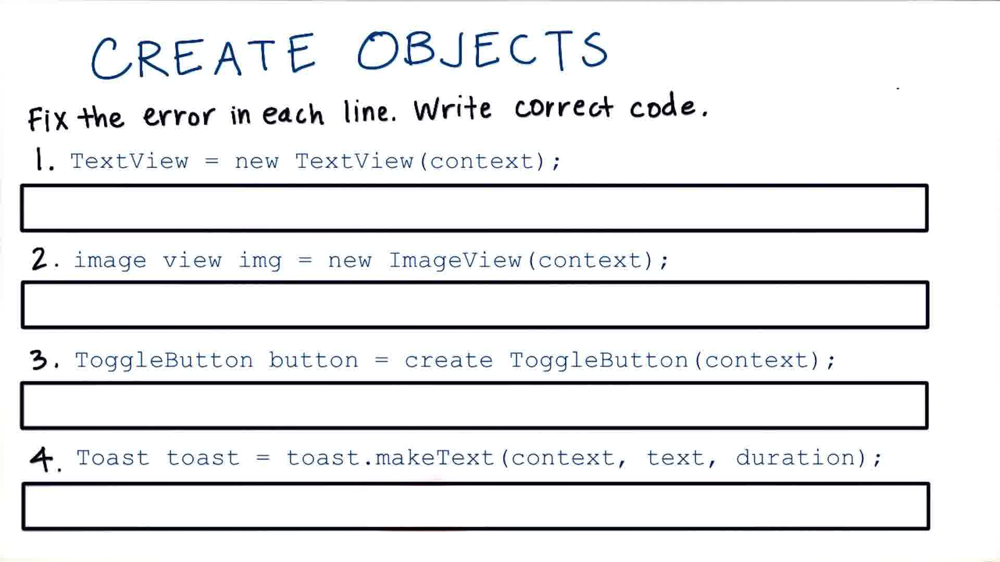
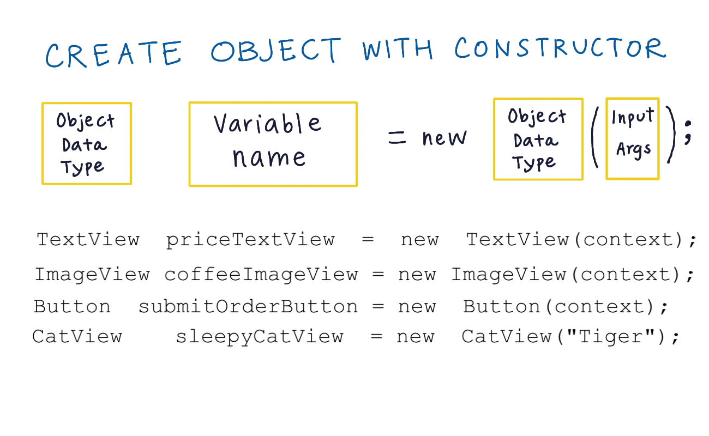
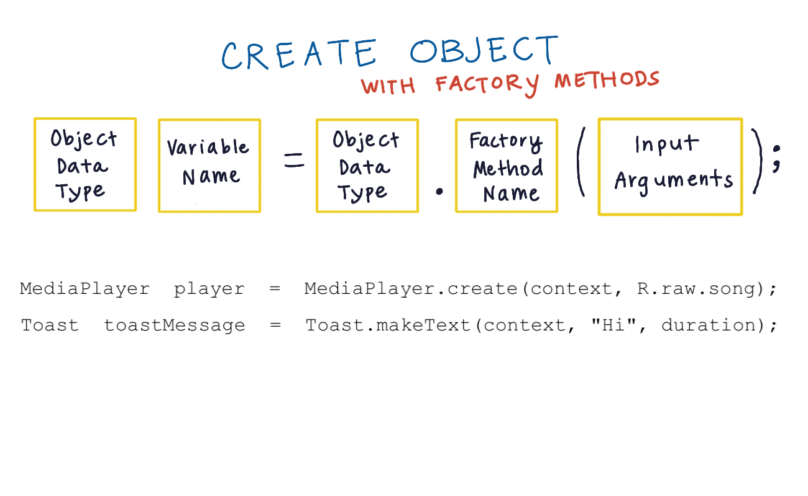

16. Create an Object
Create an Object
Question:
Start Quiz:

Solution:
INSTRUCTOR NOTE:
Remember that not every class has a factory method to create a new instance. Some use the new key word we saw Katherine used in the intro video.
Need a little more help? Recall these structural examples:


- More information about Java classes/objects
- Simplified TextView code
- Simplified ImageView code
- In the simplified TextView code, I mentioned you can read more about Context. Here’s a link to an explanation.
- Actual TextView code
- Actual ImageView code
- Learn about Android's Toast objects
To have a link to the source code (for each Android class) embedded within Android documentation pages, check out this Chrome extension.
If you don’t have Chrome, there are other ways to browser the Android source tree on-line. For example here's a TextView.
Or if you’re hardcore, you can download it onto your computer.